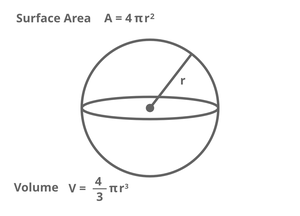

Formulas:

I find it very interesting that all planets and most moons are (almost) the shape of a sphere. Why don't we see triangular or cubic planets?
It's because of gravity pulling everything to the center.
Watch this video for more information: